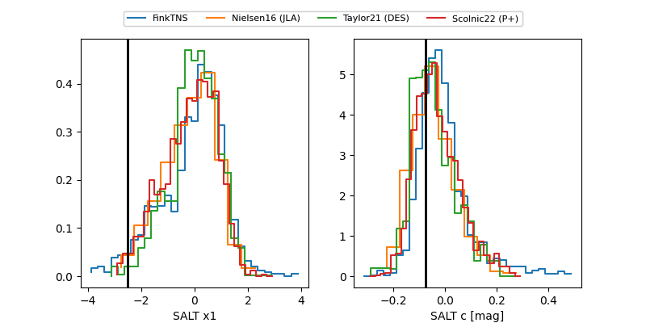

FINK: ZTF25abqopkf
Lasair: ZTF25abqopkf
ALeRCE: ZTF25abqopkf
TNS: 2025xpx
YSE: 2025xpx
ZTF25abqopkf (ztf,fink)
2025xpx (tns,yse)
ATLAS25lkm (atlas)
equatorial (ra, dec) = (23.0924,+25.29466)
galactic (l, b) = (134.4816,-36.65742)

last atlasc=18.89, atlaso=19.47, ztfg=19.16, ztfr=19.19
1 atlasc, 1 atlaso, 2 ztfg, 2 ztfr detections